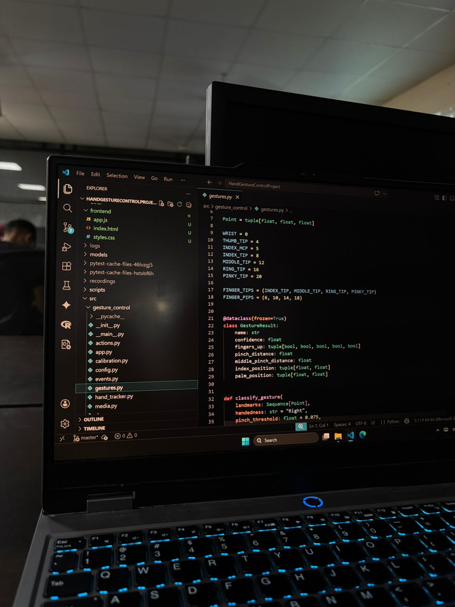
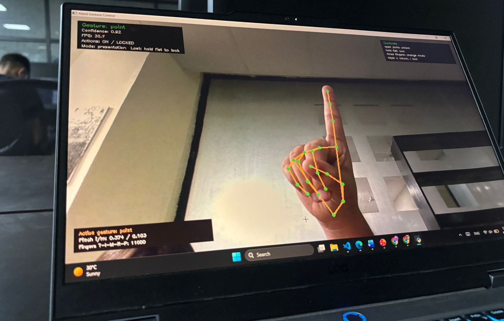
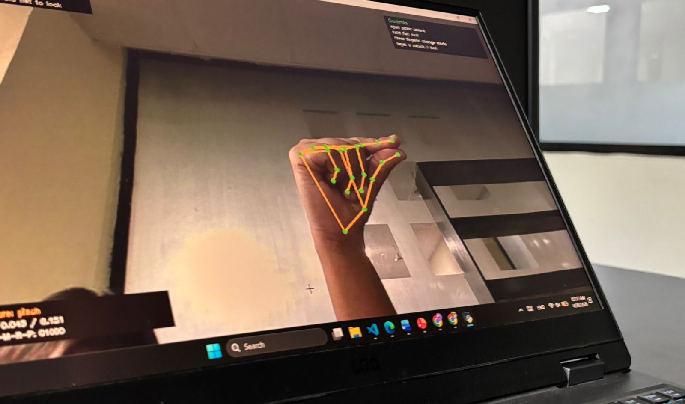
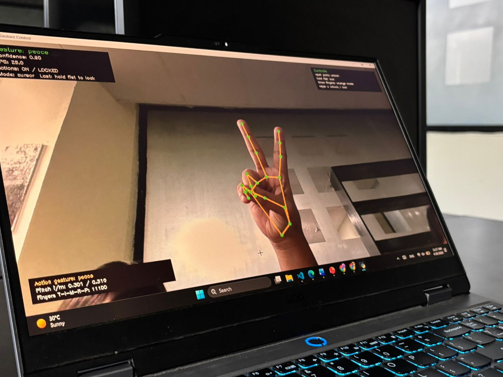
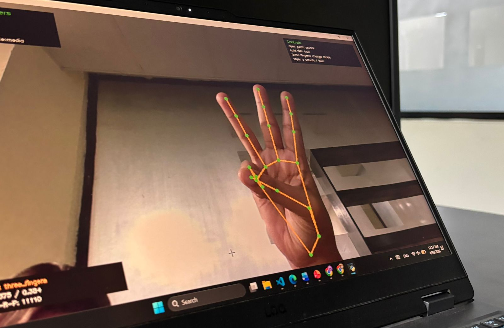

Applied Computer Vision Project
Hands-free computer control using real-time gesture recognition.
A webcam-based interaction system that identifies hand landmarks, recognizes stable gestures, and converts them into practical computer actions such as cursor control, volume adjustment, shortcuts, presentation navigation, browser control, and QR-based file sharing.

Project Overview
Designed as a complete interaction layer, not only a gesture detector.
The system processes each camera frame, detects hand keypoints, classifies the user’s gesture, smooths noisy predictions, and triggers the selected computer action only when the gesture is stable enough. Safety controls such as preview mode, open-palm unlock, hold-fist lock, and cooldowns make the application suitable for live use.
Core Capabilities
Natural gestures mapped to everyday workflows.
Cursor Control
Point to move the cursor, pinch to click, hold pinch to drag, use peace sign to scroll, and thumbs-up for right-click.
Volume Control
Thumb-index distance is mapped to system volume, creating an intuitive physical control for audio adjustment.
Shortcut Modes
Gesture mappings support screenshots, media controls, browser tabs, and presentation navigation without touching the keyboard.
File Transfer
Share mode starts a local transfer server and displays a QR code so a phone or another computer can receive the file over Wi-Fi.
System Architecture
Frame by frame, gesture by gesture.
OpenCV reads the webcam stream and prepares each frame for processing.
MediaPipe detects 21 keypoints that describe the hand’s pose and position.
Finger states and landmark distances classify point, pinch, peace, palm, fist, and mode-switch gestures.
Label smoothing, confidence checks, cooldowns, and lock states reduce accidental triggers.
The final stable gesture is routed to cursor, volume, browser, presentation, media, shortcut, or sharing actions.
Project Gallery
Live recognition states captured during testing.




Applied AI Positioning
Model integration with a production-style control layer.
Model role
MediaPipe’s pretrained hand landmark model identifies keypoints on the hand in real time. These landmarks provide the visual understanding required for gesture recognition.
Application layer
The project adds gesture logic, temporal smoothing, confidence thresholds, calibration, safety states, OS automation, event logging, file transfer, and packaging.
Training statement
The base model was not trained from scratch. The project focuses on applying a pretrained vision model and engineering the decision layer that turns predictions into a usable interface.
Live Demo Command
Run the complete system.
Use this command for a full demonstration with real actions, tuned profile, debug overlay, and file-sharing support.
python -m gesture_control --camera -1 --enable-actions --profile config/my_profile.json --share-path "path\to\demo.pdf" --show-debug --ui-scale 0.5